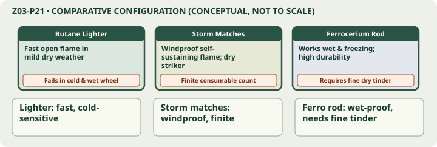

Z03-P21 · Fire and ignition · Adapted historical material
Compare disposable lighters, stormproof matches and ferrocerium rods
Select complementary modern ignition tools with different weather and mechanical failure modes.
When it applies · Packing fire-ignition kits for permitted trips and emergency preparedness packs.
Equipment · Two independent ignition tools (e.g., butane lighter plus stormproof matches or ferrocerium rod) in waterproof storage.

Actions
- Recognize that disposable butane lighters give fast easy flame in mild dry air, but lose vapor pressure in freezing cold and fail if the flint wheel gets wet.[C11, ED]
- Recognize that stormproof matches ignite reliably in wind and rain and burn briefly on their own, yet are single-use consumables limited by count and dry striker surfaces.[C11, ED]
- Recognize that ferrocerium rods work wet and in subfreezing air for thousands of strikes, yet produce only brief sparks that require well-prepared fine dry tinder and two-handed dexterity.[C11, C03, ED]
Failure recognition · Packing a single disposable lighter for a winter hike and finding zero flame when cold hands and freezing air drop butane pressure.[C11, E06]
Verify · Confirm your kit carries at least two ignition tools with independent failure modes, stored dry and tested safely before departure.[C11, E02, ED]
Stop or change course · Do not rely on untested friction skills as your primary field ignition method; always carry reliable modern ignition plus a no-fire insulation plan.[C11, C08, C12]
Evidence and editorial notes
- C03 · USDA Forest Service / Smokey Bear · Smokey Bear’s Campfire Safety Guide (agency PDF)
- Section: Build your campfire > Tinder, kindling, fuel · Conditions: Outdoor authorized campfire
Support: Dry tinder, small kindling and larger fuel serve different roles. Gather materials before ignition. Avoid accelerants.
Limitations: Species availability and moisture content vary by season and local collection rules. · Conflicting evidence: None; separates material function from unverified species claims.
Editorial note: Used to stage three-tier fuel geometry without prescribing specific live trees. · Specialist reviewer: Fire prevention
Primary source · checked 2026-11-24 - C08 · NWS · What To Do If You're Caught in a Winter Storm (current web edition)
- Section: Outside > If there is no shelter nearby · Conditions: Stranded outdoors during a winter storm
Support: Seek shelter and block wind and wet exposure. Reduce heat loss from contact with snow or ground.
Limitations: Does not guarantee overnight survival without adequate insulation or rescue. · Conflicting evidence: None; reinforces no-fire exposure control priority.
Editorial note: Anchors no-fire fallback when ignition fails or is banned. · Specialist reviewer: Cold-weather shelter specialist
Primary source · checked 2026-11-24 - C11 · NPS · Ten Essentials (current web edition)
- Section: Fire and illumination · Conditions: Outdoor emergency kit
Support: Carry a dependable ignition option and protect it from moisture. Carry a separate light.
Limitations: Disposable butane lighters lose vapor pressure in freezing cold; matches fail when damp. · Conflicting evidence: None; supports redundant dry ignition kit planning.
Editorial note: Keeps lighting independent of fire-building. · Specialist reviewer: Field equipment and fire prevention
Primary source · checked 2026-11-24 - C12 · NPS · Forces and Tools (current web edition)
- Section: Background and Procedure > Bow Drill · Conditions: Interpretive demonstration using known materials
Support: Reciprocating motion turns a spindle against a hearth. Friction heats wood dust until it can sustain an ember.
Limitations: Moisture, resinous wood, poor notch geometry, or physical fatigue can prevent ember formation. · Conflicting evidence: Does not guarantee ignition in emergency field conditions; conceptual/supervised training only.
Editorial note: Clearly distinguishes cold mechanism instruction from field-validated emergency ignition. · Specialist reviewer: Fire prevention and mechanism reviewer
Primary source · checked 2026-11-24 - E02 · NPS · Ten Essentials (current web edition)
- Section: Navigation; insulation; emergency shelter; emergency food and water · Conditions: Outdoor trips; adjust kit to season and route
Support: Carry essential systems including navigation, insulation, light, water and emergency shelter.
Limitations: Carrying items without practice or cold-weather verification does not ensure readiness. · Conflicting evidence: None; baseline kit system architecture.
Editorial note: Supports failure-mode packing and kit verification cards. · Specialist reviewer: Field education and search and rescue
Primary source · checked 2026-11-24 - E06 · CDC · Preventing Hypothermia (current web edition)
- Section: Recognizing and treating hypothermia · Conditions: Cold wet exposure; signs such as confusion, slurred speech, fumbling or drowsiness
Support: Suspected hypothermia warrants prompt help and protection from further cooling. It can occur above freezing if wet or chilled.
Limitations: Early mild shivering can mask rapidly worsening judgment impairment. · Conflicting evidence: None; aligns with ARC and WMS guidance.
Editorial note: Anchors exposure-to-medical escalation thresholds. · Specialist reviewer: Wilderness medicine
Primary source · checked 2026-11-24
Source lineage · NPS Ten Essentials and B012 P19; new manuscript · Classification · Adapted historical material.